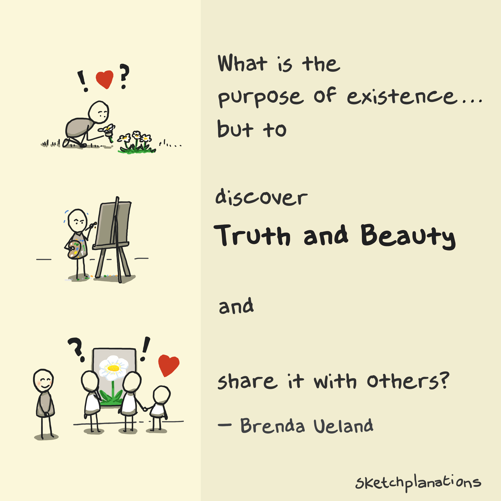

I'm a Senior Software Engineer @ AWS Life Sciences AI, shaping architecture and execution across 2 AWS services in a 5-team, 60-engineer organization. Over the past 4 years, I helped build AWS HealthOmics from scratch and spent 2 years leading teams as an Engineering Manager.
When life permits, I'm also an educator. I authored an Intro to Python textbook and teach both Bioinformatics and Computer Science courses at UC San Diego.
At a certain point in our lives, we lose control of what's happening to us, and our lives become controlled by fate. That's the world's greatest lie. Paulo Coelho, The Alchemist
I'm currently exploring the theme of "less is more." My mentors are my two nieces, who do a stellar job of reminding me of what truly matters (and, more importantly, what doesn't).
Software is a unique profession that generates intangible, fleeting things that break often and evolve constantly.
Among the chaos, I find it incredibly valuable to take a step back and remember:

Sabeel Mansuri (c) 2026